国内実績 / アジア大会 / 競技アプローチ
- 日本記録更新（3回）
- 2022年 単発 19.86
- 2022年 平均 21.58
- 2023年 平均 19.55
- 単発・平均ともに日本人初の20秒切りを達成
- 国内・国外大会で優勝7回
- Rubik's WCA Asian Championship 2024 準優勝。
既存の818手順に加え、海外トップ層の2768フローティング手順群を日本で初めて採用・運用し、改善を重ねて実績化。
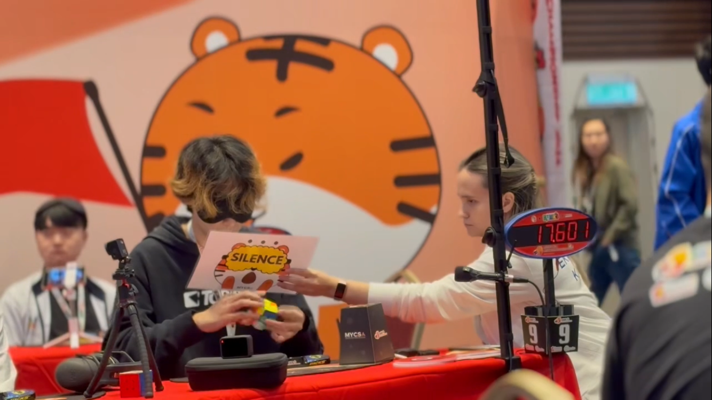
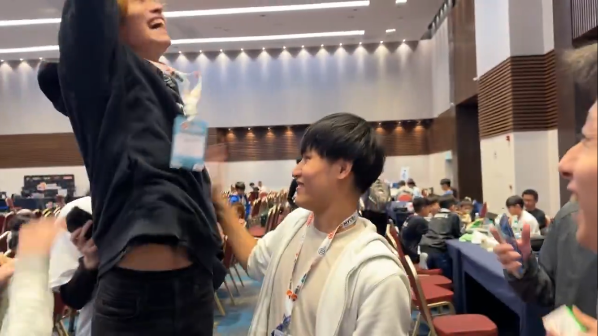
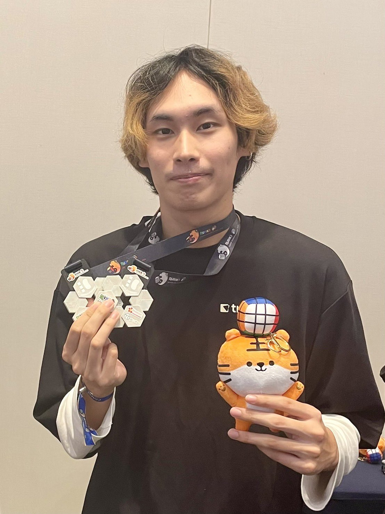
プロ・メディア活動
- ニノさん（2022年7月放映）
- 24時間テレビ（2022年8月放映）
- ニノさん（2023年1月放映）
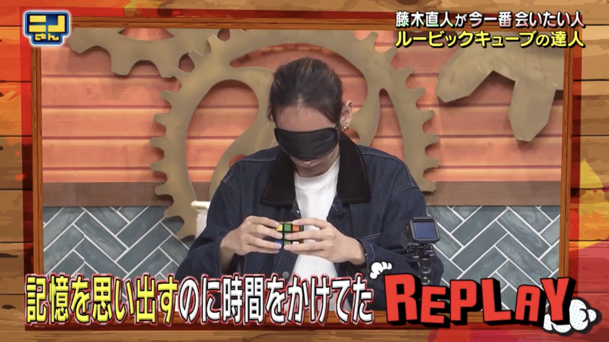
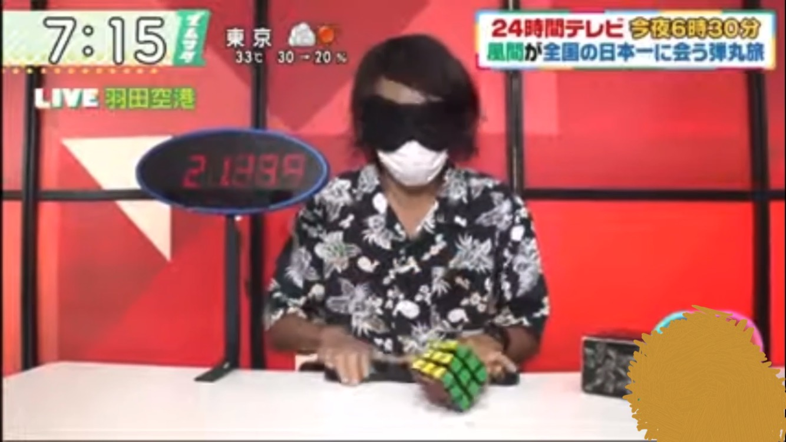
教育
- 目隠しルービックキューブのHowTo動画が8万再生。コミュニティで最も多く再生されている。
- 教材をきっかけに多くの人が目隠しルービックキューブを成功させ、ある視聴者は日本3位まで到達

- 東京化学技術館 パズルデーでステージイベント・講師参加(2回)
- 小学校での指導
- 個別指導塾と提携し30人規模のイベントを5回主催
- のべ200人以上にルービックキューブの解き方を指導
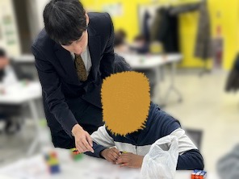
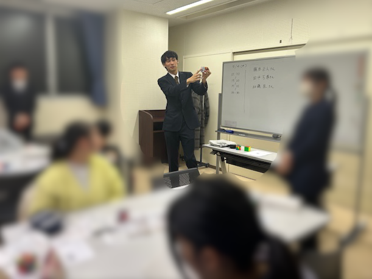
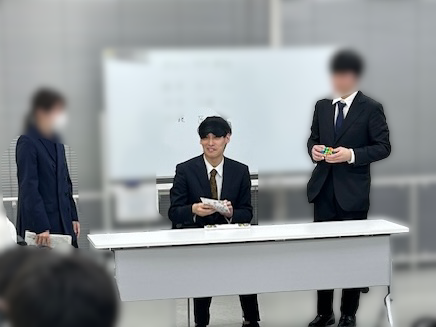
AI / 開発スキル
- 将棋AI制作(コンピュータ将棋選手権に出場)
- AIエージェントによるWebアプリ開発。webアプリはすべてcodexを駆動して短期間で開発しています。
- 板読みAIの研究。日本株における板を前処理、Transformerでの学習までを行い、スプレッド控除後有意なリターンを達成
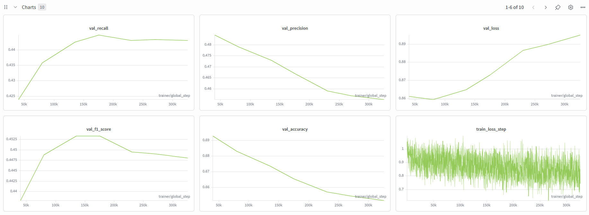
- 3 factor modelによる銘柄選択（複数窓で判断）
- 分析結果の可視化を重視
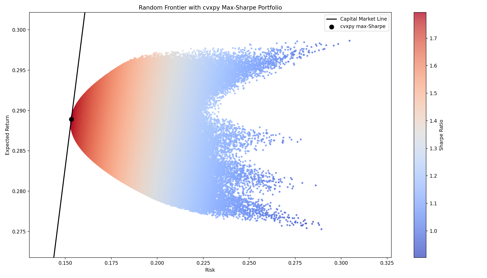
資格・趣味
- 基本情報技術者(2026/2取得)
- 簿記二級(2026/3取得)
- CMA(挑戦中)
- 数学:計算が得意で数検準一級取得（一級勉強中）
- 将棋:大学生から始めて現在初段。成蹊大学の団体戦(2025年)でC2クラス優勝。地域の小中学校でボランティア指導など
- 読書:ウォール街の投資家たちの伝記や四季報が好きです。市場と経済が面白く、毎日日経新聞を読んでいます。
チームプロジェクト
-
成蹊大学文化会Instagram運用・模擬店リーダー担当
成蹊大学文化会Instagram -
模擬店初出店でタンフルという新規商品に挑戦
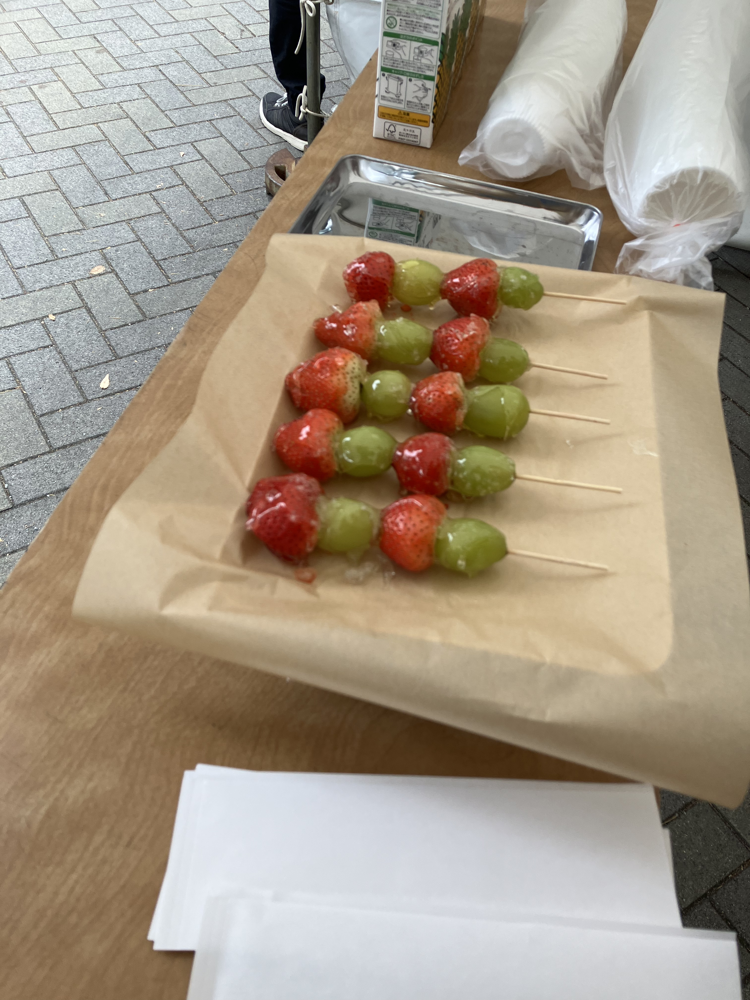
-
企画・仕入れ・飴付けの研究・衛生管理などを担当して、チームの協力のお陰で成功に導くことができました。
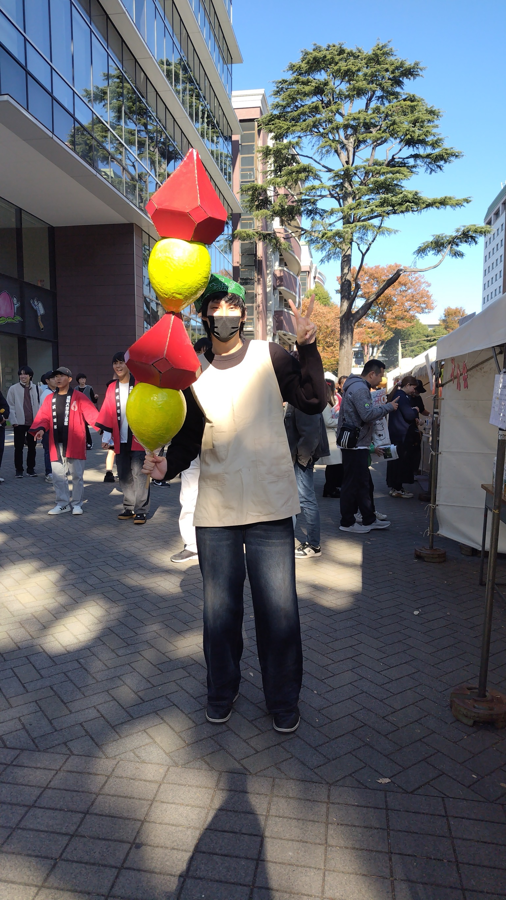
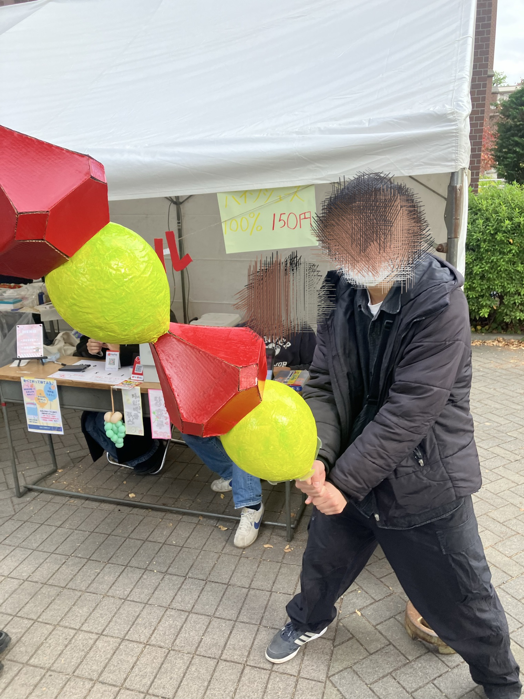
- ルービックキューブの3大会の運営に協力